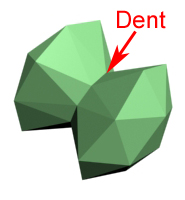

Why is Concave vs Convex important to Torque?
All of the collision in Torque is done against closed convex collision meshes (the Terrain is a special case).
There are some serious optimizations that can be made to collision and ray casting code if you assume that the meshes you are colliding against are closed convex volumes. Doing collision against arbitrary meshes is becoming more and more feasible as processor speeds increase (and with multiple processors and physics specific processors) but it is still much, much slower than doing collision against convex hulls.
Because Torque uses only convex collision meshes, it is very important that you, as an artist, have a very clear understanding of what it means for a shape to be convex or concave.
The Definitions
According to Webster the definition for concave is:
con·cave
1 : hollowed or rounded inward like the inside of a bowl
2 : arched in : curving in -- used of the side of a curve or surface on which neighboring normals to the curve or surface converge and on which lies the chord joining two neighboring points of the curve or surface
It also defines convex as:
con·vex
1 a : curved or rounded like the exterior of a sphere or circle b : being a continuous function or part of a continuous function with the property that a line joining any two points on its graph lies on or above the graph
2 a of a set of points : containing all points in a line joining any two constituent points b of a geometric figure : comprising a convex set when combined with its interior <a convex polygon>
If you are scratching your head and going, "Huh?" at this point don't worry. That is a pretty common reaction! Let's dive a little deeper into with a few handy visual aids and see if we can't clear things up.
Concave and Convex in 2D
Generally the easiest way to approach concave and convex shapes is to look at them in 2D. If you take a look at the diagram below you will see an example of a concave shape and a convex shape:
You may note that I specifically looking at closed shapes. Why is that? Well, the idea of concavity and convexity requires that you have an "outside" vs an "inside" or a "front" vs a "back" to the lines, edges, or polygons that you are looking at. While we could use the line or face normals to determine which side is the front and which side is the back, this can get confusing so we are going to stick to closed shapes which have a clear "inside" and "outside". This also becomes useful later when we get into a deeper discussion of the requirements of the Torque collision system.
"Inward Curve or Dent"
What is the difference between the concave shape and the convex shape in the image above?
You'll note that the concave shape has this "dent" here:
This is where the lines making up the shape curve inward. The convex shape has no lines that curve inward like this. Instead, all of its lines curve outward. As soon as any of the lines form an inward curve like this, the shape is considered to be concave. This means that there are a lot of ways to create a concave shape:
There are relatively fewer ways to create a convex shape:
What are some other ways we can compare a concave shape to a convex shape?
"The Line Test"
One thing you may note about a convex shape is that, no matter where you draw a line that passes through the shape, it will always pass through only two of the lines or polygons making up the shape:
If you try the same thing with a concave shape it can pass through more than two of the lines:
Even if there are places on a concave shape that you can draw a line through and have it only pass through two of the lines or polygons, if it can be draw anywhere on the shape so that it passes through more than two lines, then the shape is considered concave.
This is a fairly straight-forward test that you can "eyeball" as an artist and it translates well into 3D shapes so it can be quite handy.
"The Angle Test"
Another way to look at concave shape is that it has lines or segments that form an angle between them that is less than 180°. If you take a look at our original concave shape you can see that the lines that make up the dent form about a 78° angle:
Meanwhile, our convex shape is made up entirely of 225° angles:
As soon as any of the angles becomes less than 180° then you are dealing with a concave shape. This is a good mathematical test that is easy to code against.
Convex and Concave in 3D
Hopefully, by this point, you are starting to get a decent idea of what makes a 2D shape concave vs convex. So how do we translate this over into 3D? It is fairly simple:
You can run the same tests against the 3D shapes to see if they are concave or convex:
Inward Curve

Line Test
Angle Test
Concave and Convex Applied to Torque Collision
Now that you should have a decent handle on what a convex mesh is, let's take a look at how you apply this to Torque collision meshes.
In Torque there are two major types of polygonal mesh models: DTS (ThreeSpace Shapes or just Shapes) and DIF (Interiors).
Both of these require convex collision meshes but they are created in very different ways.
DTS Shapes
DTS Shapes are models that are created in your traditional 3D modelling packages like 3DS Max, Maya, Milkshape, Lightwave, GameSpace, and Blender. The meshes themselves have no requirements on how they are built. They can be open or closed. They can have volume or be totally flat. They can also be concave. These models are very useful for objects in the world that require fine detail like a Player model, a weapon, a powerup, or an ornate light fixture.
Even though the meshes of the DTS Shapes are not required to be convex, their collision meshes are required to be convex. This means that the visible/rendered mesh rarely matches the collidable mesh. This is fine for most things. After all, your player really won't notice that they aren't colliding with the rivets on the side of the bucket and if they do it will most likely annoy them that it is slowing them down.
A great deal of game development is creating approximations that are believable enough for the consumer to buy into. Even though your collision meshes are limited to being convex it is possible to fool the player with a collision mesh that works well enough.
Let's take a look at the buggy that comes with Torque for an example:
As you can see there are quite a few protrusions and detail on this mesh, like the fins on the back. For a standard racing game you will never need to collide with a mesh nearly so detailed. In fact, if the buggy were to roll over all of that detail would get in the way.
Instead it is simple enough to create a convex hull that approximates the shape of the buggy:

This convex hull is close enough to the shape of the buggy that the average game player is not going to be able to tell and it is simple enough that very speedy collision tests can be done against it.
However, sometimes you are going to need collision meshes that match a lot more closely to the visible mesh. For example, take a look at this mesh:
If we were to approximate the shape of this mesh with a convex collision hull it would end up looking something like this:
This is obvioulsy a problem. If the player were to attempt to walk onto this model they would end up walking right up an invisible ramp which would look extremely unnatural.
At this point a lot of artists get the bright idea of just cloning the original mesh and using that as the collision mesh. This seems like a good idea except that then your collision mesh isn't convex!
This is a very common first time mistake among Torque artists. It is even further complicated by the fact that the Player can even walk on this collision mesh without too much difficultly. But if you were to shoot a Projectile at this mesh it would go right through!
Important Note: If you ever have a Projectile go through your collision mesh even when the Player can walk on it, then your collision mesh is not convex. It may be a tiny little flaw in the mesh but it is definitely there.
So how do we create a collision mesh that matches up to our visible mesh and is convex? The secret is to use multiple collision meshes!
If you combine enough convex meshes together you can create a concave shape.
Let's take a look at a simple arch:
An arch is a very concave shape and would be impossible to accurately approximate with a single convex collision mesh. Instead we can use several convex collision meshes and get a much closer approximation of the shape of the arch:
The more convex collision meshes we add, the closer it matches our visible mesh. Keep in mind, though, that the more collision meshes you add*, the more collision calculations have to be done and the slower the collision gets. With experience a game artist learns how much it costs them and learns how to tune their collision meshes to meet the needs of their game. It is always a balance between accuracy and speed.
Remember our scene above? Here is how you would lay it out so that the collision meshes match up with the visible mesh (each color denotes a different collision mesh):
* Torque did not support more than 9 collision meshes until TGE 1.4.0. Because of this some DTS exporters will not export more than 9 collision meshes.
DIF Interiors
Generating collision meshes by hand for smaller meshes like a car, a player, or a platform like the one above can be a little tedious but it isn't too bad. But what happens when you start having to generate the collision meshes by hand for large buildings or structures or for your entire level? This is where DIF Interiors come into play.
Interiors are made up entirely from convex hulls or, as they are more commonly known as by game artists, brushes. So what you see is what you collide against. There is no difference between the visible meshes and the collision meshes.
This is accomplished by limiting the artists and their tools to building their meshes purely out of convex brushes. They can not create concave or flat meshes. Instead they must piece their geometry together out of smaller convex hulls. This sounds terribly limiting. How are they supposed to build anything that looks good without it having concave curves? As you may recall from our earlier discussion, if you combine enough convex pieces together you can get concave geometry as a result:
One way to think about it is like you are building your structures out of somewhat flexible lego blocks. Not all that long ago, every game that required high speed collisions was built entirely in this manner. This is beginning to change but many of the great games of the past were built in this manner:
Fortunately, there are several tools that are designed to make building geometry in this fashion easier. While it is possible to build brush-based geometry in a traditional modelling package the artists are still limited to working with convex brushes which can be hard to do. Also, there are not many exporting tools that do a good job at getting mesh data from a modelling package out into a form that is usable for brush-based buildings or levels. In general, it is actually going to be easier for an artist to learn one of the brush-based editors that exist rather than having to relearn how they use their current tools. The fact that brush-based editors work only with convex hulls means that they are simpler and can be quickly picked up and learned. However, it does require a different mindset.
Torque Constructor is one of these brush-based editors. It was designed to be comfortable for traditional 3D artists who are more comfotable working in high-end modelling packages. Its highly customizable workflow and interface help to ensure that artists will be able to create a working environment that is efficient and streamlilned for them. Constructor also leverages the power of TorqueScript so that artists can work together with their programming partners to extend the existing tools and functionality and to create new tools and plugins. Since Constructor is built on top of the powerful Torque Game Engine it is completely cross-platform and is a true WYSIWYG Interior editor.
Other Differences Between DTS and DIF
There are few other key differences between DTS Shapes and DIF Interiors. The first is that DIF Interiors do not yet support any animation. They also do not support transparent textures. If you need animation or transparency then you are forced to use DTS models.
On the other side, DTS Shapes can not include any visibility information. It is possible to split a DIF Interior up into a set of zones that only render when they are in view of the camera. This optimization can keep most of a building from rendering when you only have a small portion of it in view or if you are standing in one small part of it. With large DTS Shapes, either all of it is rendered or none of it.
Because a DIF Interior is built entirely of convex hulls or brushes, it is possible to run it through a geometry optimization pass when you export them. This pass will automatically remove all of the hidden surfaces in the Interior. For example, if you have a column that touches the floor the polygon on the bottom of the column will never be visible and to render it would be a waste of resources. The convex nature of brush-based geometry allows the exporter to detect this situation and to remove that polygon without any artist intervention.
DIF Interiors also support lightmap rendering. When a DIF Interior is exported the lighting for the structure is precalculated and baked into a set of textures that are blended with the diffuse textures of the geometry. Because this is done in a non-realtime process, the lighting for this can be far nicer than that of the realtime lighting on the DTS Shapes in the game. DIF Interiors also support casting precalculated shadows onto the Terrain.
Both DTS Shapes and DIF Interiors do support multiple LOD meshes.
You can combine DIF Interiors and DTS Shapes together in the Torque Mission Editor. This allows you to place a building or structure in the mission and then to populate it with higher detail DTS models. You might place a DIF house and then put a DTS table and chairs in it:

This also has the advantage that if a DIF Interior zone is not getting rendered then the DTS Shapes that are inside it will also not get rendered. It makes sense to think of DIF Interiors as the larger buildings, structures, or levels that your player will have to run around on or inside of while thinking of DTS Shapes are the smaller more intricate models that you use to add fine detail to your mission.
Any Questions?
Hopefully this tutorial has given you a pretty good idea of what the difference between concave and convex is as well as a good grasp of the differences between a DTS Shape and a DIF Interior. Becoming proficient in using this knowledge will take time and practice but it is my hope that this tutorial wil lhave given you a solid foundation to work from!